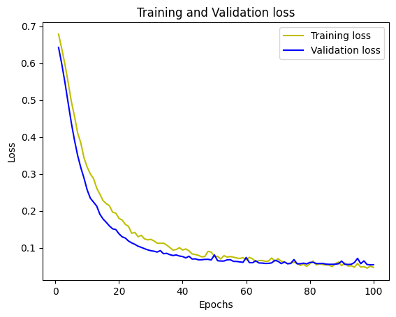
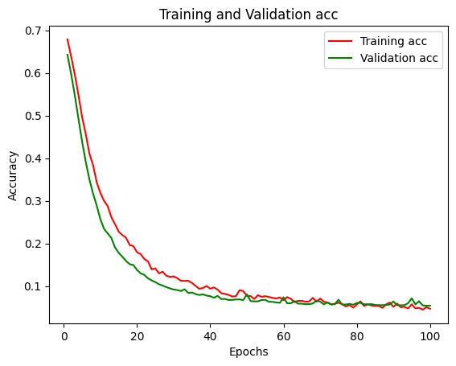

Dashboard - Classification du Cancer du Sein
Ce tableau de bord présente les performances du modèle de classification pour prédire si un cancer est bénin ou malin.
Les pertes d'entrainement et de validation.
L'accuracy d'entrainement et de validation.
La matrice de confusion sur les données de test.

Matrice de confusion
| Prédit: Bénin | Prédit: Malin | |
|---|---|---|
| Vrai: Bénin | 70 | 1 |
| Vrai: Malin | 1 | 42 |